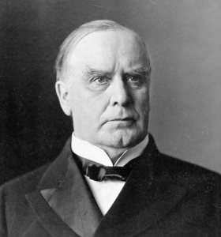

Year Established: 1892
Founder: Edward Hargrave
In the late 19th century, as the American economy shifted from an agrarian to an industrial base, the financial needs of communities across the Midwest were evolving. The rapid expansion of railroads, factories, and trade required reliable institutions to support this economic growth. In the heart of Chicago, amid the booming population and bustling commerce, Edward Hargrave, a self-made businessman with a vision for community-centered banking, founded Horizon Bank in 1892.
Edward Hargrave was born into a modest family in Ohio, and after moving to Chicago in his youth, he worked his way up through the ranks of various banks. With a keen understanding of both finance and the everyday needs of people, Hargrave saw an opportunity to create a bank that would be more than just a place to store money—it would be a trusted partner for families, small businesses, and emerging industries.
The Early Years
Horizon Bank’s first branch was a modest storefront on the corner of Main Street and River Avenue. Hargrave's guiding principle was simple: a bank should serve the people, not just the elite. He implemented a series of forward-thinking policies, including low-interest loans for farmers and small business owners, and an open-door policy that welcomed clients from all walks of life.
In the early 1900s, as the U.S. entered the age of industrialization, Horizon Bank quickly gained a reputation for helping local entrepreneurs secure financing to grow their businesses. Its role in supporting the construction of local infrastructure—roads, factories, and schools—cemented its reputation as a vital community institution.
Expanding Horizons
As the 20th century unfolded, Horizon Bank expanded beyond Chicago, opening branches in other key Midwestern cities. The 1920s saw the bank introduce a range of innovative products, such as the first savings accounts that offered interest, and a revolutionary service that allowed customers to conduct transactions via mail—a precursor to modern online banking.
The Great Depression, however, presented a formidable challenge. While many financial institutions collapsed under the weight of the economic downturn, Horizon Bank remained steadfast. Hargrave, ever committed to his principles, kept the bank solvent by focusing on long-term relationships with customers rather than short-term profits. In 1933, as part of the New Deal reforms, Horizon Bank became one of the first banks to participate in the Federal Deposit Insurance Corporation (FDIC) program, reassuring customers that their deposits were safe.
Post-War Growth and Innovation
After World War II, Horizon Bank flourished in the post-war economic boom. With a rapidly expanding middle class and an increasing demand for credit, the bank introduced new consumer banking products, such as home mortgages, car loans, and business lines of credit. By the 1960s, Horizon Bank had become one of the leading regional banks in the Midwest.
In 1971, Horizon Bank achieved a significant milestone when it launched its first computer-based financial system, streamlining operations and allowing for more efficient processing of transactions. This technological leap would prove critical in maintaining its competitive edge in the increasingly digital financial landscape.
21st Century: A Legacy of Trust
Entering the 21st century, Horizon Bank had grown into a well-established institution with branches across the Midwest and a solid national presence. The bank’s leadership remained committed to its founder’s original vision: serving the community with integrity, innovation, and a focus on long-term relationships. The bank’s embrace of digital banking in the 2000s brought it into the modern era, allowing it to serve customers through mobile apps, online banking, and ATMs.
In 2017, Horizon Bank became one of the first major financial institutions to integrate blockchain technology for secure, transparent transactions. This commitment to innovation, combined with its strong community ties, has ensured that Horizon Bank continues to thrive as a trusted partner for individuals, businesses, and communities alike.
Today and Beyond
Today, Horizon Bank stands as a symbol of resilience and innovation, having weathered both the boom and bust cycles of American finance while remaining dedicated to its founding principles. With a diverse range of services—ranging from personal banking and mortgages to commercial lending and investment management—the bank continues to serve millions of customers across the country. The Hargrave family still holds a majority share in the institution, and Edward Hargrave’s great-great-grandson, James Hargrave, serves as the bank’s CEO, ensuring that the values of trust, service, and community remain at the core of the organization.
As Horizon Bank looks toward the future, it remains committed to empowering its customers with the tools, resources, and knowledge they need to achieve financial success—just as it did more than a century ago when Edward Hargrave first opened its doors.
The Early 20th Century: Building Trust and Resilience
In the decades following Horizon Bank's founding, the institution became synonymous with trust and financial stability in an era marked by economic upheaval. The bank's early success was built on the strong personal relationships Hargrave cultivated with his customers. Unlike the larger, more impersonal financial institutions that began to dominate during this period, Horizon Bank remained a community-focused entity, deeply involved in the lives of its clients.
During the **First World War**, when the financial landscape was again in flux, Horizon Bank played a critical role in managing wartime savings bonds and assisting local manufacturers who were converting their operations to meet the demands of war. Despite the financial volatility of the time, Hargrave’s prudent financial management allowed the bank to expand steadily while many competitors faced insolvency.
The 1930s and the Great Depression
The *Great Depression* presented perhaps the most significant challenge in Horizon Bank’s history. Like many banks of the era, Horizon saw a dramatic rise in defaults and financial strain as businesses collapsed and unemployment soared. However, under Hargrave’s leadership, the bank took a different approach from others. Rather than cutting off loans or selling off assets, Horizon Bank focused on working with its customers to weather the storm. Hargrave personally met with many of his business clients and agricultural borrowers to renegotiate terms and extend repayment schedules. This human-centered approach earned the bank not just the loyalty of its customers, but a reputation as an institution that stood by its community during times of hardship.
When the **Banking Act of 1933** was enacted, Horizon Bank was one of the first to embrace the reforms, securing deposit insurance for its customers through the newly established **Federal Deposit Insurance Corporation (FDIC)**. This move reassured the public and restored confidence in the banking system. While many banks closed their doors during the Depression, Horizon Bank’s stability allowed it to emerge from the crisis stronger than ever.
The Post-War Boom: Expanding Horizons
The end of **World War II** brought a period of unprecedented economic growth in the United States. Horizon Bank, which had carefully navigated the difficult 1930s, found itself poised to capitalize on the new prosperity. The 1940s and 1950s saw an explosion in consumer demand for homes, automobiles, and goods, leading to a rapid increase in personal and business loans.
In 1946, Horizon Bank opened its first branch outside of Chicago, expanding into **Detroit**. This marked the beginning of a new chapter for the bank, one defined by geographic expansion. By the 1960s, Horizon had branches in **St. Louis**, **Cleveland**, and several other major Midwestern cities.
During this time, Horizon Bank diversified its offerings. It introduced **mortgage lending** to help families purchase homes, established a **trust department** to manage wealth for affluent clients, and launched **business banking** products to assist small- and medium-sized enterprises. The success of these initiatives helped position Horizon as not just a regional bank, but a leading financial institution in the Midwest.
The Technological Revolution: Embracing Innovation
The 1970s and 1980s were marked by technological advancement in banking. Horizon Bank, eager to stay ahead of the curve, began investing in **computerization** to streamline its operations. By 1971, the bank was one of the first in the region to implement **automated teller machines (ATMs)**, allowing customers to withdraw cash and check balances without entering a branch. This innovation set the stage for Horizon's continued focus on technology, helping it remain competitive in an increasingly digital world.
In 1985, Horizon Bank made another significant leap forward by integrating **electronic funds transfer (EFT)** systems, enabling the bank to offer faster, more secure services to its business clients. The introduction of these systems made Horizon Bank a leader in modernizing financial services, and its commitment to technological advancement kept it at the forefront of the industry as new challenges and opportunities arose.
Surviving the 2008 Financial Crisis
As the world entered the **21st century**, Horizon Bank’s commitment to community service and long-term growth allowed it to continue thriving in an increasingly competitive environment. However, the **2008 financial crisis** posed a serious challenge to the global banking industry. Horizon Bank, unlike many of its larger counterparts, had avoided the risky practices that led to the collapse of major banks. Its conservative lending policies and strong focus on community-oriented business kept it financially sound throughout the crisis.
During the downturn, Horizon Bank’s leadership was instrumental in helping local businesses navigate the fallout of the recession. The bank quickly adjusted its lending strategies to provide **working capital lines of credit** to struggling businesses and maintained its commitment to the mortgage market by offering **foreclosure prevention** programs to homeowners in distress. By helping individuals and businesses stay afloat, Horizon Bank earned widespread admiration and continued to expand its customer base, emerging from the recession as a more trusted and resilient institution.
Expanding into the Digital Age
In the 2010s, Horizon Bank took a bold step forward by embracing **digital banking**. It launched an intuitive **mobile banking app** that allowed customers to manage their accounts, deposit checks, pay bills, and transfer funds from their smartphones. The bank also enhanced its **online banking** platform, offering a wide range of financial services and making banking more accessible for a new generation of customers.
Horizon Bank’s **cybersecurity** and commitment to privacy became top priorities as the rise of online fraud and data breaches became a concern for financial institutions worldwide. Horizon invested heavily in advanced encryption technologies and secure authentication processes to ensure the safety of its customers’ data.
In 2017, Horizon Bank made headlines again with its innovative use of **blockchain technology**. The bank launched a pilot program using blockchain for **secure, transparent** transactions in its commercial lending division, streamlining loan processing and reducing the risk of fraud. This move solidified Horizon Bank’s reputation as a forward-thinking, tech-savvy institution that continued to prioritize both innovation and customer security.
Horizon Bank Today
As of today, Horizon Bank stands as a model of enduring success. It operates over **250 branches** across the U.S., with a strong presence in the Midwest, Southeast, and **West Coast**. The bank offers a comprehensive suite of services, including **retail banking**, **small business lending**, **wealth management**, **commercial financing**, and **investment services**. With more than **$50 billion** in assets, Horizon Bank remains a powerful force in the financial sector, serving millions of customers from all walks of life.
Despite its large size, Horizon Bank has maintained a strong focus on community engagement. Its **corporate social responsibility** programs focus on promoting **financial literacy**, supporting **local charities**, and investing in sustainable business practices. The bank also sponsors a variety of community outreach programs, including educational scholarships and local entrepreneurship grants, ensuring that its founding values of trust, service, and community continue to guide its mission.
The Hargrave Legacy
The Hargrave family remains closely tied to Horizon Bank, with the **Hargrave Foundation** continuing to fund educational and philanthropic projects in the bank's hometown and beyond. James Hargrave, the great-great-grandson of the founder, now serves as CEO, ensuring that the family’s legacy of integrity and vision is carried forward into the next century.
Looking ahead, Horizon Bank is preparing for the future with a focus on **sustainability**, **inclusive banking practices**, and continued investment in emerging technologies like **artificial intelligence** and **fintech innovations**. The bank’s dedication to its customers and community remains unwavering, as it continues to evolve to meet the needs of the next generation of banking customers.
The history of Horizon Bank is a testament to the enduring values of its founder, Edward Hargrave: resilience in the face of adversity, a commitment to the community, and a drive to innovate in service of its customers. As the bank moves forward into its second century, its foundation of trust, integrity, and service remains as strong as ever.
This Bank has been around for more than 2 centuries
we have been helping people with their finiancial problems so if you
want some financial advice go to the contact us page